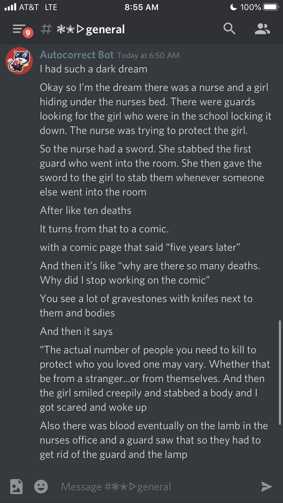

if you get lucid dreams.
i dont get lucid dreams. i just have no control over them because i dont realize they’re dreams.
i have a couple bare recollections of a few dreams i’ve had, but beyond the wisps i cannot remember anything. i remember them happening, i remember remembering them. but i dont remember them, if that makes any kind of sense
“Sometimes your party will cast the spell you need them to.”
“Other times they cast Marin Karin.”
TOO REAL
unrelated question has anyone here tried playing snowrunner
Wot that?
game
extremely frustrating game
Have not played, have watched, will not play.
1 Like
Doesn’t really look like my kinda game
I remember a lot of my dreams, in some nights even until 5 different dreams.
Most of my dreams are lucid I guess?
Aka I exactly know that its just a dream and I have some willpower over it
Often when I’m pissed or scared of my dream (thats very very often) I’m sitting down and just try to wake up. Often it works, but if not, I’m just dreaming about waking up, and have to figure out if this is still a dream or not. Most times it gets obv after a few minutes.
When I wake up and decide that its too early to be awake, I can decide if I want to go into the same dream, or have a new one. Im able to stay in same dream over multiple wakeups, sometimes even over multiple days.
im so jealous of that ability.
quick way to tell if its a dream, ive heard, is to read something. anything. it should have gibberish text if its a dream
Whenever I figure out it’s a dream I wake up and I’m always sad

wow it was much more scary then I realized
4 Likes
anyone want to read into the meaning of that dream
whenever I realize something is a dream i’m too lethargic to actually do anything about it and so I just let it play out
What the
I try to control my dream but then I feel myself waking up and then I’m sad.
1 Like
The only two times I’ve realized I was actually in a dream I either woke up immediately or it turned out to be a double dream.
So I woke up after a nightmare which I thought was over, only for it to repeat itself.
That does sound a lot more terrifying than your initial description.
When’s FoL 28?
If someone wants to be main host I could Co-Host it.
I just spent six hours buying turnips
Hopefully i’ll be the most shrewd trader in the stalk market by the time i sell all of them

been dying to host FoL again actually since FoL 24
I’ve learned a lot hosting wise since then
1 Like